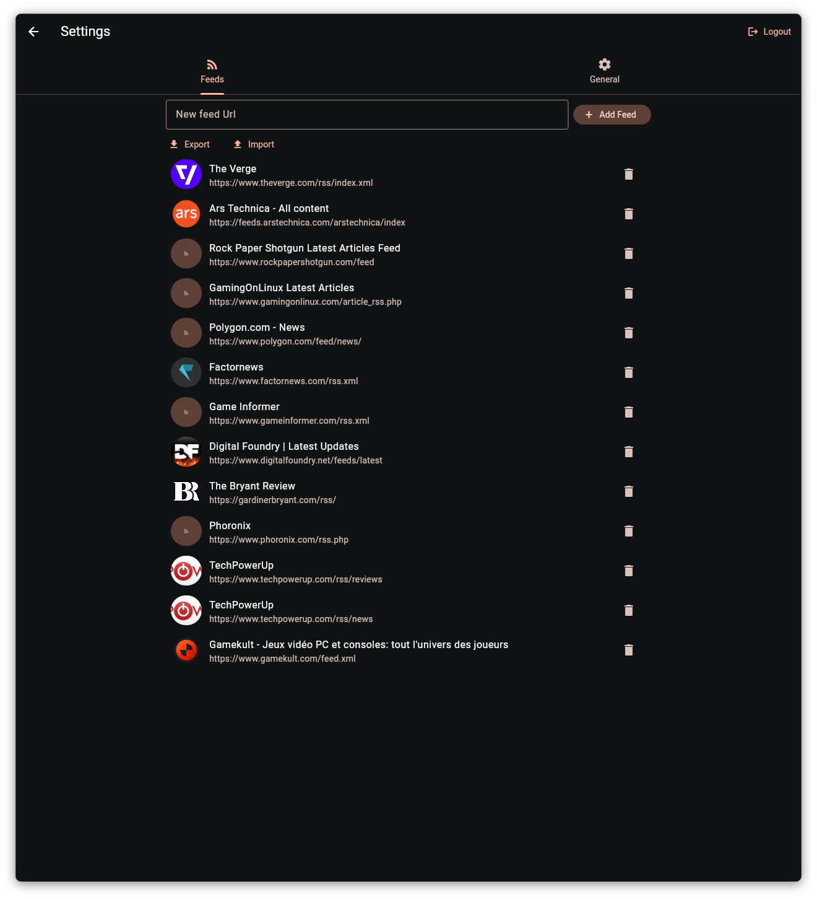
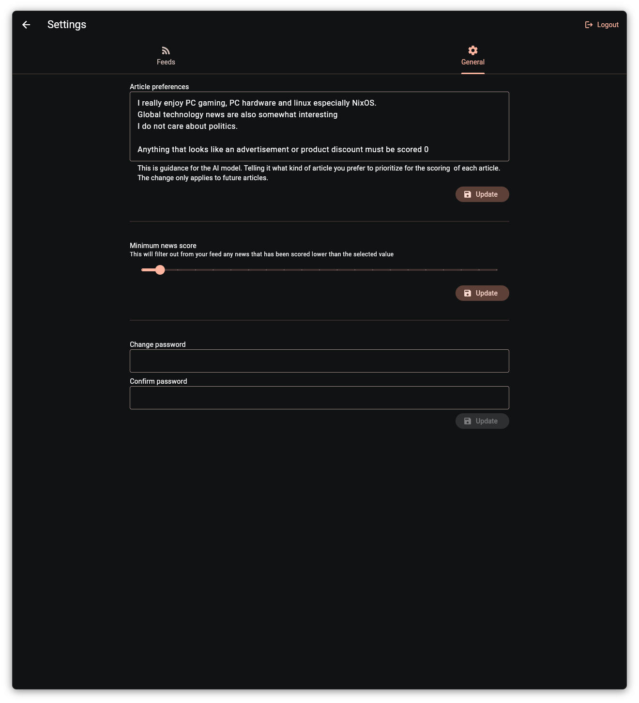

User manual
Newsku is fairly straight forward to use but here's how to get started
Add feeds
Once you've created your account, go to the settings (top right icon on the screen) and add or import your preferred RSS feeds.

Set up AI preferences
By default, the AI model will decide what is important news on its own. You can steer its article scoring by setting your preferences in the "General" tab.
Note that the change will only apply to future articles.
